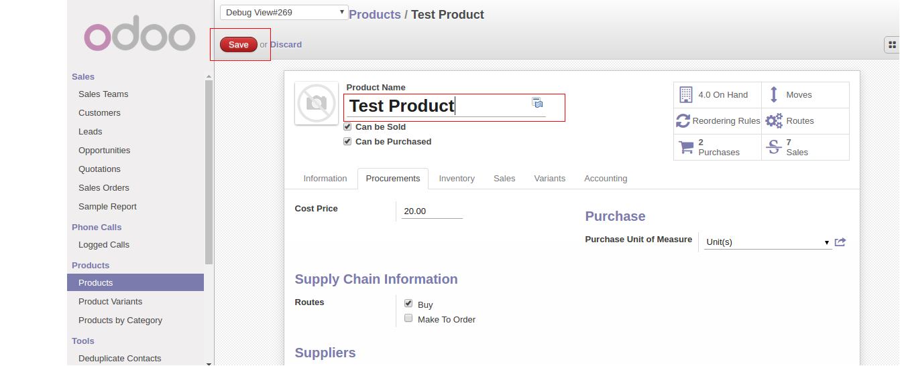

<section class="oe_container">
    <div class="oe_row oe_spaced">
        <h2 class="oe_slogan">Odoo Backend Theme</h2>
        <h3 class="oe_slogan">You can start implementing / developing your custome theme from here.</h3>
    </div>
</section>

<section class="oe_container oe_dark">
    <div class="oe_row">
        <h3 class="oe_slogan">Customize your theme base on your reqirements!</h3>
        <div class="oe_span6">
            <p class='oe_mt32'>
            The purpose of this module is to how to start deploying your own custome theme in Odoo.!
            </p>
        </div>
        <div class="oe_span6">
            <div class="oe_bg_img">
                
            </div>
        </div>
    </div>
</section>

<section class="oe_container"><h2 class="oe_slogan">Help and Support.</h2>
<div class="oe_slogan">
            Gmail : dabhi.dilip969@gmail.com<br/>
            Skype : dabhi.dilip969
</div>
</section>
